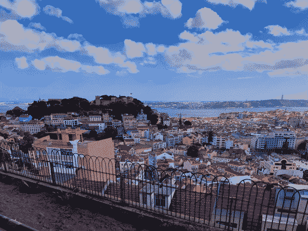

Underhill from Red Mars

Thu Aug 15 2024:I've been reading the Mars Trilogy by Kim Stanley Robinson. I've been loving these books and flying through them. This was how I imagined the initial settlement, Underhill, with it's barrel-shaped shelters and giant salt pyramid.
I also read his more recent The Ministry for the Future, which I would highly recommend for some great speculative fiction on addressing the climate crisis.
This piece was a little more of a challenge with wanting to use a 1-point perspective and shading, but I am happy with how it came out! I use... Read more
Your project is worth it
After reading a blog post from Andrew Dana Hudson about thermochauvinism, I have begun referring to July as "Hot
Winter," a time of year when I spend most of my time indoors because ... Read more
We cannot afford to skip repairs

Maintenance and repair are essential to a more sustainable, and frankly pleasant world. Well-maintained
bikes feel, sound, and ride better. Well-maintained roads are easier and safer for everyon... Read more
My Kingdom for a Paper Map

Recently returned from a ten day vacation in Lisbon, Portugal to celebrate my mother-in-law's birthday. This
is the longest trip I've taken since Ruby and I spent three weeks in Ireland for our ... Read more
My interest in Solarpunk

Over the past few years, I have been taking in a lot of Solarpunk influences.
Solarpunk is a movement/genre/aesthetic/practice based around ultra-sustainability, averting climate climate
... Read more
Abolish Landlords

No one gets seconds til everybody gets a home. Hunger and homelessness are policy choices.
This was a fun piece to work on and I was happy to have found a great
color palette by polyphrog to make this wi... Read more
Sketches of the Real

I have been sketching lately. Mostly sitting in a place and drawing a building or plant within view. Some of
these sketches are better than others, but these sketches are mental exercise more th... Read more